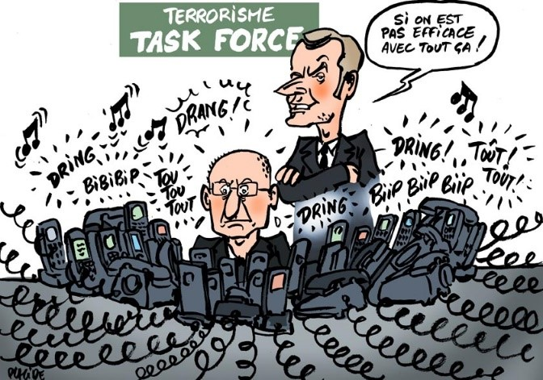

1. Désinformation
La désinformation est l'un des plus grands fléaux des réseaux sociaux. Avec la viralité des contenus, de fausses informations peuvent se propager à une vitesse alarmante, influençant ainsi les opinions publiques et individuelles.
Les "fake news", les théories du complot, et les canulars deviennent rapidement viraux, notamment lorsqu'ils sont partagés par des figures influentes ou relayés massivement. Cela entraîne une confusion générale et peut même impacter des événements majeurs comme des élections ou des crises sanitaires.
Il est crucial de vérifier les sources et de développer son esprit critique face aux informations partagées en ligne.
Vidéo informative2. Influence
Les réseaux sociaux sont devenus un outil puissant d'influence, que ce soit pour promouvoir des produits, des idées politiques, ou des comportements spécifiques. Les influenceurs jouent un rôle clé dans cette dynamique.
Toutefois, cette influence peut parfois être utilisée de manière manipulatrice, incitant les utilisateurs à adopter des comportements nuisibles, à dépenser de l'argent de manière excessive ou à croire à des idéologies dangereuses.
Il est essentiel de rester vigilant et de ne pas se laisser emporter par des tendances ou des recommandations sans esprit critique.
3. Enrôlement Terroriste
Les groupes terroristes utilisent les réseaux sociaux pour recruter de nouveaux membres, diffuser leur propagande et radicaliser des individus vulnérables.
Ces groupes exploitent l'anonymat et la portée mondiale des plateformes pour cibler des jeunes en quête d'identité ou de cause à défendre. Les algorithmes de recommandation peuvent parfois amplifier ce contenu en le suggérant à des utilisateurs ciblés.
La sensibilisation, l'éducation et une surveillance active sont essentielles pour prévenir ce type de danger.